How can models learn to predict the world from diverse visual experience and demonstrations?
Retain
Use
Predict
Selective memoryRetain useful context
Safety-aware learningCondition the use of dual-use knowledge
Predictive world modelsLearn from diverse visual experience and demonstrations
KVzip NeurIPS’25 Fast KVzip NeurIPS’26
Mark, Don’t Erase NeurIPS’26
Seoul World Model ECCV’26 LaLa-World arXiv soon WATCH arXiv soon
Efficient
Reliable & Grounded
Seoul World Model: ground long city videos in retrieved street views
LaLa-World: one latent predictor for robots, simulators and web video, driven by language
WATCH: transfer interactions from human demonstrations to robots
What is a world model?
A world model predicts how the world changes when an agent acts.
Three uses in this part
SimulateRender what a camera would seeSeoul World Model
PlanCompare imagined futures before actingLaLa-World
ActPredict the action together with its futureLaLa-Policy · WATCH
World models: Ha & Schmidhuber, 2018; LeCun, 2022 · cup example after LaLa-World §1: “Before pushing a cup across a table, we know where it will end up and whether it might fall.” · illustrative schematic.
ECCV’26
Seoul World Model: Grounding World Simulation Models in a Real-World Metropolis
OpenVidweb videono action labelcaptions only→“The hand stirs the liquid in the cup with the spoon, creating a swirling motion …”
Separate predictors per domain; video data left unused.
One shared interface → one predictor for every domain · 10 datasets · 6.5M transitions
LaLa-World · after the problem and idea scenes of the explainer video (materials/lala-world-video); Fig. 1(a), Fig. 3, Table G · vector signs are illustrative; magnitudes and sentences follow Fig. 3.
A language model is the world-model predictor
The same latent pipeline, but the action is read as text by a language model.
xt−1:t
Encoder(Frozen DINO)
et−1:t
Predictor: a language modelQwen3.5-0.8B
z = “move 2 left and 4 up”
visual
move2leftand4up
text
qqq
queries
êt+1
Fine-tune → LaLa-Policy predicts a1a2a3… and the future latent
Read actions as text The LM consumes the language condition with visual latents.
Predict the next latent Learned queries read out êt+1, matched to the frozen encoder’s et+1.
Reuse the learned dynamics Fine-tune the world model to predict actions and future states.
LaLa-World §3.2, Fig. 1(b) · drawn after the explainer video’s model scene · predictor Qwen3.5-0.8B, frozen DINO encoder; example action from §1 · latent panels: PCA views (Fig. M), illustrative.
Planning with imagination, in words
Sample actions → predict latent futures → compare with the goal → execute the best.
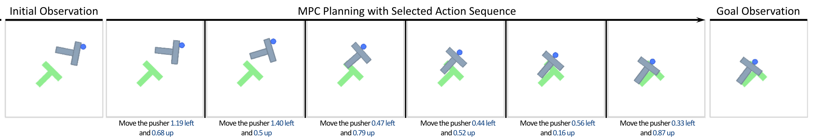
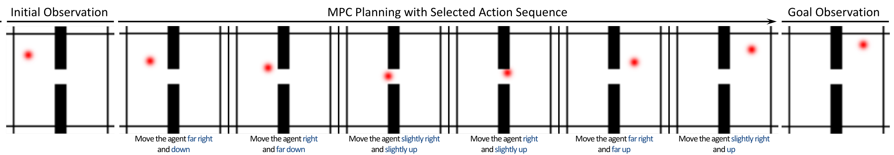
One predictor understands numerical actions and words such as “slightly” and “far”.
LaLa-World · Figure 2, selected rows (shared header repeated for Wall) · images are simulator observations after selected actions, not decoded predictions.
Higher average planning scores with one predictor
What the one predictor imagines
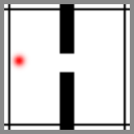
Wall
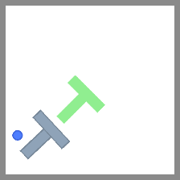
Push-T
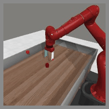
MetaWorld
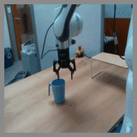
DROID
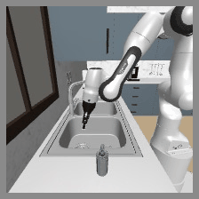
RoboCasa Reach
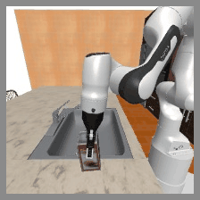
RoboCasa Place
startimaginedgoal
+ image & video data: 59.3 → 61.6 average; with re-phrased actions, 52.5 → 61.0.
LaLa-World · bars: Table 1 (one jointly trained predictor vs. per-domain baselines; RoboCasa zero-shot; the second average includes the DROID offline action score) · GIFs: decoded predictions under the selected actions, Figs. M, O, P, Q, R, S (MetaWorld includes the replanning observation) · last line: Fig. 4 / Table F.
Latent prediction makes repeated planning practical
Matched data, visual encoder, and language conditions; ≈0.8B predictors.
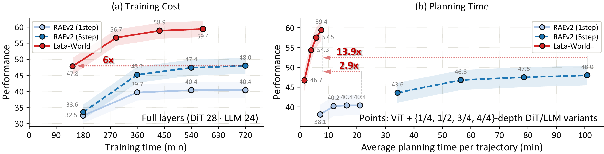
6×
less training to reach RAEv2’s final score
59.4 vs 48.0
final planning performance
13.9×
faster average planning than five-step RAEv2 at full model depth
LaLa-World · Figure 5, original paper figure · DINOv3-L/16, same training data; 8 × H100 for 12 h. Speedup is specific to this comparison.
What does the planner imagine?
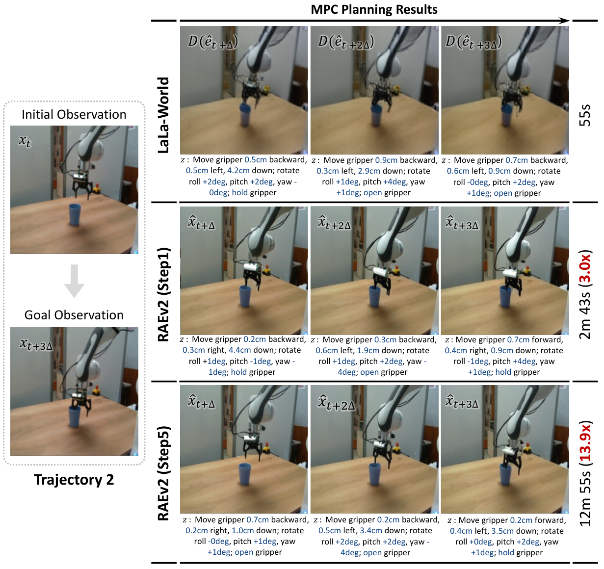
Plan in latent space. Decode to inspect the prediction.
The same start and goal reveal what each model predicts along its selected action sequence.
55 s
LaLa-World
12 m 55 s
RAEv2 · 5 steps
The decoder is used only to visualize the latent forecast.
One DROID trajectory · qualitative example and its planning time, not an aggregate success-rate comparison.
LaLa-World · Figure 6, trajectory 2 · source figure; frames show decoded predictions, not robot execution.
LaLa-Policy: predict the action and its future
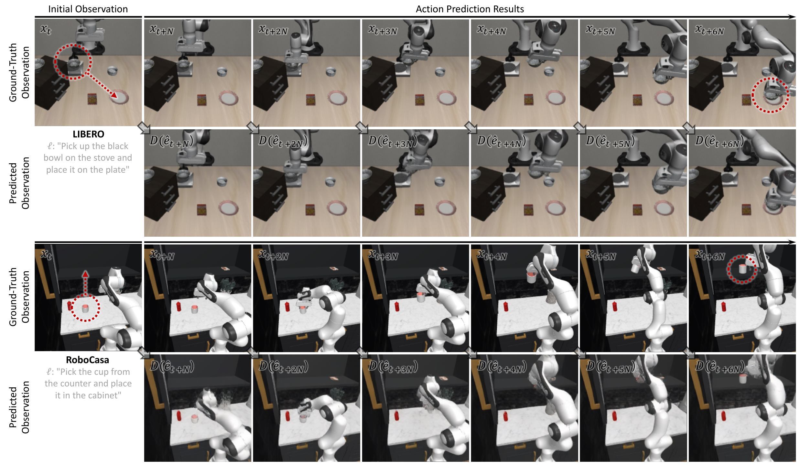
Each task: simulator observations above, decoded future latents below.
Fine-tune the pretrained predictor to output an action chunk + future latent.
97.7%
LIBERO average success
57.3%
RoboCasa · 50 demos
5.2–5.5×
faster policy inference than Cosmos Policy in these benchmarks
LaLa-World · Figure 7; Tables 2–4 · adapted Cosmos Policy baseline; inference time per trajectory: LIBERO 0.86 vs 4.45 s; RoboCasa 2.12 vs 11.71 s.
What is a world-action model?
One model predicts the next actions and the frames they lead to.
InputPredicts actionsPredicts future
Policy (VLA)π0.5, GR00T
image + instructiona1a2a3…—
World modelSWM, LaLa-World
image + action—frames or latents
World-action modelCosmos Policy, WATCH
image + robot state + instructiona1a2a3…future frames
LaLa-Policy, on the previous slide, follows the same recipe with latents instead of frames.
Start from a video model
Video pre-training brings broad visual and physical priors.
Predict actions and frames together
Frames show how each action changes the scene.
Robot demos are costly; human videos are plentiful, but the person and scene differ.
WATCH §1–2.1 (Cosmos Policy recipe on a pretrained video model) · Cosmos Policy (Kim et al., ICLR’26) · UVA, UWM (RSS’25) · rows after LaLa-World Fig. A(b).
One human demonstration, then the robot
Put the marker in the cup
A person shows the task once, with handheld grippers.
A two-arm robot then does it: it knocks the cup over, sets it upright, and finishes.
Different body, different motion, same task.
24-second video · 8× speed, as labeled Plays muted on entry; unmute with the controls.
Video: Generalist AI, GEN-1.5 (“Embodied foundation models are one-shot learners”, 2026), one-shot marker-in-cup demo, supplied file · WATCH App. A lists GEN-1.5 among human-demonstration pre-training efforts that adapt to new tasks from in-context demonstrations.
What carries over from someone else’s demonstration?
Query · this person, this kitchenReference · another person, another kitchen and source
Same task, “do dishes” The task and motion carry over; appearance and viewpoint do not.
LaLa-World shares an action interface.
WATCH learns transferable interactions from task-paired demonstrations.
WATCH · supplied task-paired clips: a query and a task-matched reference from the MECKA source (3 s each, looped) · human cross-video pre-training is followed by robot post-training; LaLa-World and WATCH are separate studies.
arXiv soon
WATCH: Learning Transferable World-Action Models from Task-Paired Human Videos
Jeongeun ParkNAVER AI Lab · Georgia Tech
Taekyung KimNAVER AI Lab
Dongyoon HanNAVER AI Lab
Sangdoo YunNAVER AI Lab
watch-wam.github.ioWorld-Action model Training from Cross-Human videos
Change the person and scene. Keep the task.
Within one video Appearance is shared between context and future.
Across task-paired videos The model must find useful interaction cues across different demonstrations.
10.99M
task-paired human clips
Human pre-training stage: no robot data. Robot-specific learning comes later.
WATCH · supplied video, 00:08.5–00:12.5, looped · query and task-matched references; “No robot data” refers to the human pre-training stage.
Predict one demonstration from another
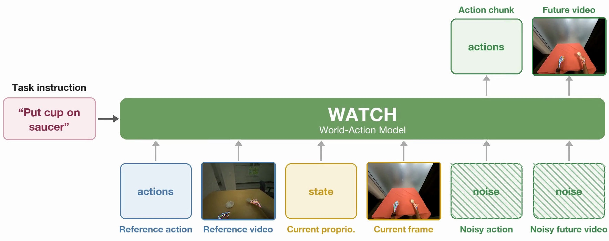
Learn across human demonstrations Reference video and actions condition the target action and future prediction.
Then adapt to the robot Robot post-training connects the learned interaction to the robot’s own actions.
WATCH · original architecture frame from supplied video, 00:19; surrounding video whitespace cropped, diagram unchanged.
WATCH: from human video to robot behavior
Look for the transfer
Human reference → GR1 in a different layout.
The reference can move faster than the robot follows.
Comparison across pre-training choices and robot embodiments.
44-second source video · no audio · plays on entry and loops Playback speedups are labeled in the video.
WATCH · supplied watch-wam.mp4 · robot demonstrations are after robot post-training.
The same episode, three pre-training choices
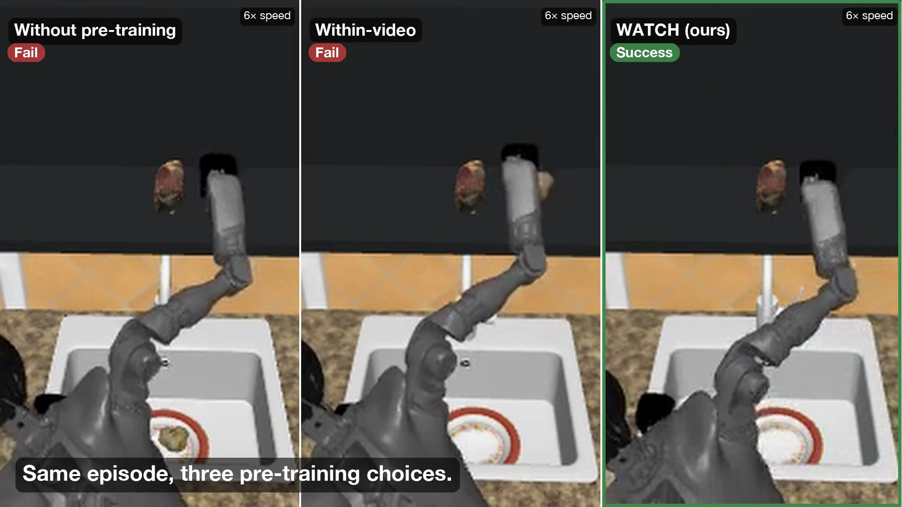
Source-video comparison: no pre-training · within-video · WATCH.
Follow the object and the final outcome.
The source marks both baselines as failures and WATCH as a success.
This shows the behavior behind the aggregate results on the next slide.
One qualitative example, shown at 6× speed in the supplied video.
WATCH · supplied video, 00:36 · one episode is illustrative; it does not itself establish the benchmark success rate.
WATCH – results
MimicDroid: base model → +WATCH, in-context post-training. RoboMIND: within-video pre-training → WATCH.
25%
of the human data is enough to match within-video pre-training on all of it (in-context L2, L3)
A different-task reference produces the largest action error in this ablation.
Embodiment-invariant features: held-out embodiment regression ρ = 0.18 (human) / 0.24 (robot) vs 0.06 / 0.01 for the original video model